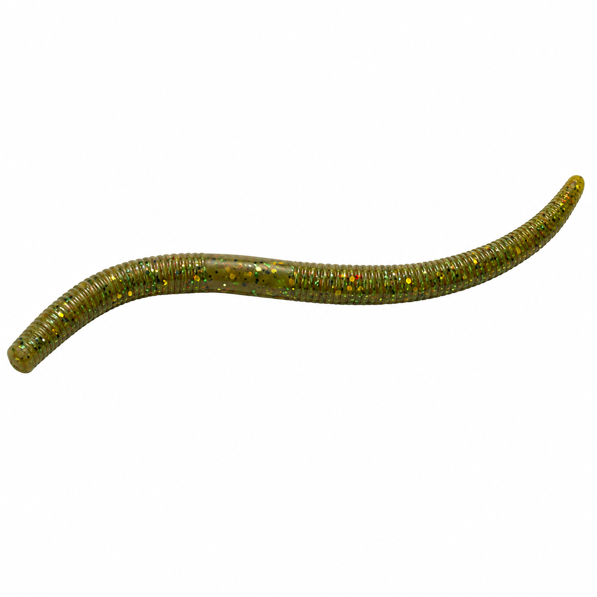
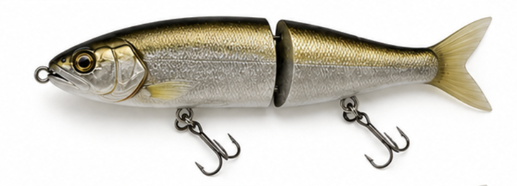
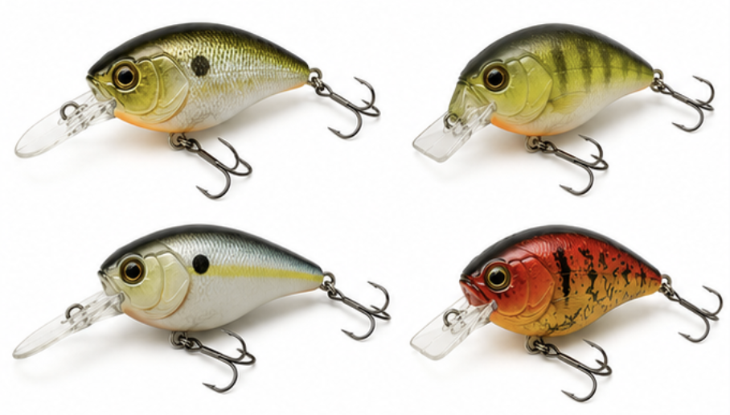
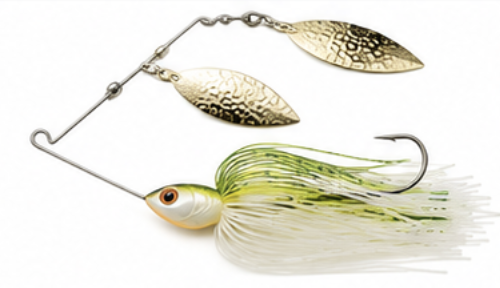
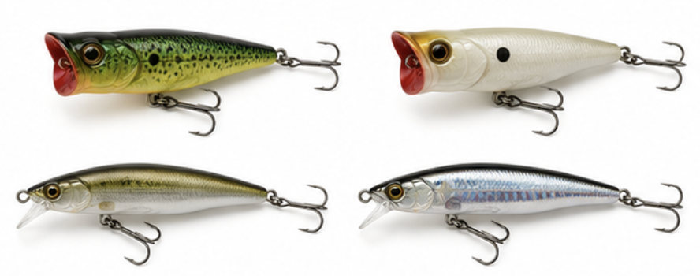
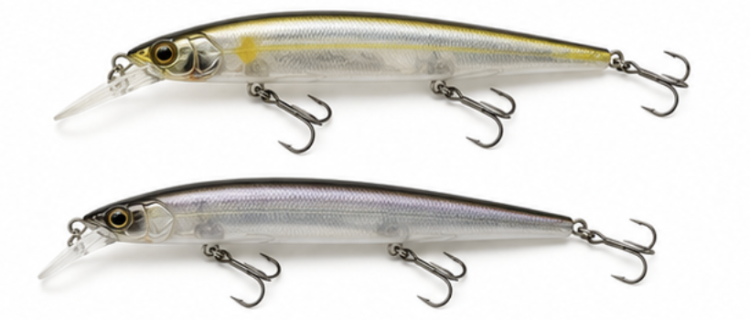

It's tempting to assume every lake takes a tackle box full of crankbaits and soft plastics. They don't. What you actually need changes a lot across these six lakes, from Japan's most famous bass water to a lake where lure fishing is against the rules. Below is what's genuinely used where, not a generic "top 10 lures" list stretched over all of them.
Biwa & Kasumigaura: lure culture at its most serious
Japan's globally recognized "J-lure" bass scene traces back largely to Lake Biwa. In 2009, Manabu Kurita landed a 22 lb 4 oz largemouth bass here that tied George Perry's 1932 world record — still one of the biggest moments in bass fishing history, and the event that put Japanese lure design on the international map. Japanese brands that grew out of this scene, including Megabass, Jackall, Deps, O.S.P, and Evergreen, are now sold and copied worldwide.
Both lakes see heavy fishing pressure, which is exactly why Japanese anglers lean so hard on finesse presentations — bass here have seen a lot of lures, and subtlety often outfishes aggression. Kasumigaura in particular has a reputation as the more technical, less forgiving of the two.
Whatever you catch and keep or release here comes with a rule attached — see rules by lake for the invasive-species law that applies on both lakes, and Shiga's no-release ordinance, which applies on Biwa only.
Popular lure types on Biwa & Kasumigaura
These categories cover most of what's actually tied on around these two lakes today.
Soft plastic wormsWacky rig / neco rig
The single most-used category on Lake Biwa right now. The Deps Cover Scat is currently the most talked-about worm on the tournament circuit there, fished on a jighead-wacky style rig that originated in Japan and later spread to U.S. anglers.

Glide baitsBig swimbaits
Large, realistic swimbaits used to trigger reaction strikes from trophy fish. Some are shaped specifically to imitate bluegill, once abundant in Biwa, and are especially effective in the post-spawn period.

Crankbaits & squarebillsCovering water
The standard choice for finding active fish quickly across open stretches of both lakes.

Spinnerbaits & bladed jigsCover & murky water
Useful around vegetation and structure, or when visibility drops and fish need extra vibration to find the bait.

Topwater poppers & walking baitsDawn & calm water
A classic early-morning choice on Biwa, when bass are feeding near the surface before the day heats up.

JerkbaitsCooler water
Suspending minnow-style baits that shine in the cooler water of early spring and late fall, worked with pauses rather than a steady retrieve.

Saroma & Ogawara: mostly bait, not lures
These two (see the Saroma and Ogawara guides) run on bait rigs far more than lures, which makes sense once you remember what's actually in the water: flatfish, herring, smelt, and shellfish, not bass.
- Flatfish (karei): the standard method nationally is a weighted cast rig with ragworm (gokai) bait, fished on the bottom and left to sit — real reports from Saroma describe exactly this, still-fishing bait near breakwater edges rather than casting lures.
- Salmon: where it's actually legal to target — see rules by lake for the river-mouth restrictions — metal spoons and jigs do get used, but this is a narrow niche given how protected salmon are here.
- Smelt & herring: caught on sabiki rigs — a pre-tied string of small bait-mimicking hooks fished below a weighted cage of chum — not lures in the crankbait sense.
If you're packing for Saroma or Ogawara, bring bait rigs, not a box of crankbaits. A tackle box built for Biwa will mostly sit unused here.
Inawashiro: a smaller, more limited lure scene
Inawashiro's naturally acidic water keeps the species list short — mainly dace and crucian carp — and historically that's meant bait fishing rather than lures. Some operators around the lake do offer lure fishing in specific areas, though we don't have detailed, verified information on exactly which lure types or techniques are used there. If you're set on lure fishing at Inawashiro specifically, a local tackle shop or guide is the most reliable source of current, accurate advice.
A permit is required here regardless of method — see rules by lake for the Inawashiro-Akimoto Fisheries Cooperative's fees and where to buy one.
Suwa: lures are banned, full stop
This one's simple: the Suwako Fisheries Cooperative bans lure fishing entirely, on the lake and on every river connected to it. Reels are only permitted for wakasagi, carp, or fly fishing, and even then, weighted cast-and-retrieve fishing isn't allowed.
In practice this changes very little about how people actually fish here, since wakasagi was never a lure fish to begin with. The standard rig is a small multi-hook sabiki-style setup baited with beni-sashi, a small red mealworm-type bait — the same basic approach used from Suwa's dome boats every winter. There's really no lure tackle box for this lake at all.
Bring the right kit for the lake you're actually fishing, not just your favorite bass box — three of these six lakes will barely touch it.
Made by us
Tsurerukana?
Our app's Smart Lure Matching feature suggests what's likely working right now for whichever of these six lakes you're on, alongside the same major/minor feeding-window scoring covered in how moon phase affects your bite window. Get it on Google Play →